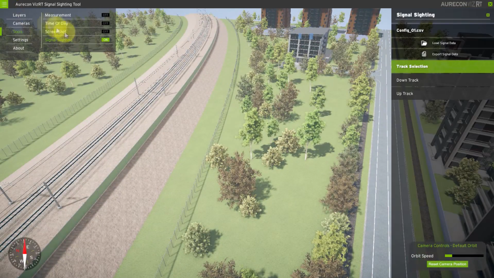
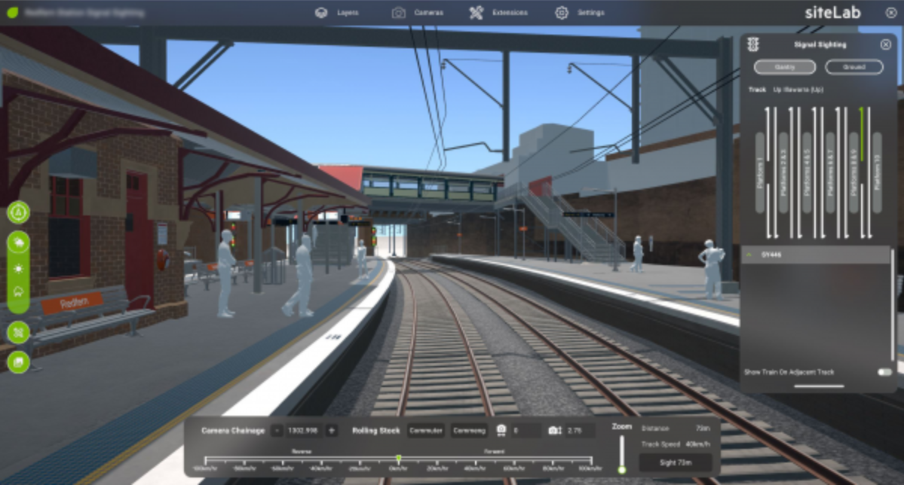
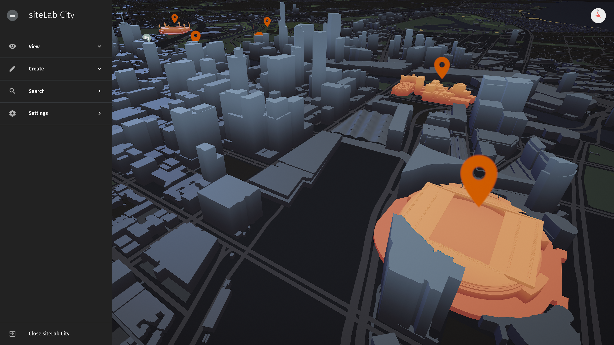

siteLab is a Unity framework that allows Unsigned Studio to easily develop high quality real-time visualisations. It provides a consistent look and feel across projects, with common tools and affordances. siteLab can also be customised with project specific tools and branding.
That's the elevator pitch, but almost every word hides a lot of interesting detail. Let's unpack it and see what we can take away.
If you’re interested in learning about the history of siteLab from the original creator, Michael Gardiner, you can watch that here.
This article was last updated on 2020-10-07. Feel free to reach out if you're interested in hearing more, my contact details are on the homepage.
The framework itself
When we talk about siteLab, we often talk about the projects that we build using it: University of Melbourne WEBS, siteLab City, etc. This is only half of the story. siteLab is also a set of tools inside Unity that streamline the workflow of building these projects.
I may be biased, but I am of the opinion that this is the most important facet of siteLab. I did not believe this at first, but it soon became obvious how much time the Aurecon Visualisation team spent on routine tasks that, as a developer, I could easily automate. The big value of siteLab was bringing the time from "getting data" to "handing over a siteLab build" down from weeks to days (or even hours, rare cases!).
While we could have used this speed to produce more routine projects with lower costs, commoditising siteLab projects would have costs as well. Part of Aurecon’s broader strategy was to drop commodity work, and instead focus on high margin sales with key clients, and this held here too; clients who want low priced work are difficult to work with and difficult to justify focusing on.
Instead, the fast iteration time for routine projects allowed us to get them in the hands of clients and stakeholders as soon as possible, with small upfront cost. Clients loved seeing their projects in siteLab, and almost always had ideas for how they could expand upon this tool with custom functionality or expanded scope. These clients were our focus, and allowed us to iterate and grow siteLab as part of standard project work. I cannot emphasise enough how much this approach was the key driver for making siteLab the product that it is.
Due to this, working on the editor tools was one of my favourite tasks. Every time we did a task more than twice as a team, we flagged it as a target for automation. Building UI, changing between photorealistic and stylised environments, and expanding camera controls all came out of these initiatives. While building custom inspectors was the easiest method of automating work in Unity, we also wanted to have a central location for as much of the functionality as possible. To achieve this, we built something we’ve called the siteLab Project Wizard. The Wizard is always accessible via the F1 key, so even non-Unity users can easily start customising projects.
Consistent look and feel
siteLab has gone through multiple brands and themes so far. Initially, it was named Aurecon VizRT, and looked like this:
 Aurecon VizRT, with the Signal Sighting tool enabled
The UI was functional, but had some notable issues. All menu content was hidden in the top left hamburger menu, and the styling was inconsistent between menus, sidebars, and floating panels. It was also difficult to brand and manipulate the UI, as it was constructed almost manually by a set of editor tools, which were themselves difficult to edit. Despite this, VizRT achieved its goals: consistent across projects, reusable functionality, minimal Unity knowledge required to get a project off the ground.
Come 2017, I was brought on to maintain VizRT and bring more functionality to the application. At the time, I was impressed with what I saw, but it didn’t take too long to run into issues with the way the editor tools and UI were constructed. With the go-ahead from the team lead, the team rebuilt the tool from the ground up. During this time, we acquired Unsigned Studio, and together we pushed to rebrand the product to siteLab.
 siteLab, with a customised Signal Sighting tool enabled
This iteration of siteLab was an exercise of bringing a design language and design consistency to the product. All menus would use the same styling, same fonts, same iconography, same colours. This might seem small, but it brought a well needed breath of fresh air to the application. Users were excited to share screenshots of siteLab, and developers were more easily able to build extensions that looked like they were part of siteLab.
Unfortunately, over time, we ran into a number of technical issues. Unity’s font rendering, even using TextMeshPro, was not rendering our fonts with the same crispness as we had designed. Blurred and rounded menus had chunky corners which could not be resolved. There was no standard for UI layouting, so every panel did end up just a little bit different from the last.
We also encountered some usability issues. For example, selecting any of the menus in the top bar would open a panel that obscured the 3D view, which was a pretty obvious issue in retrospect; what was the application for if not first-and-foremost viewing 3D content? The hierarchy of information was also confusing to users. We had menus, extensions, tools, and control panels, and users struggled to distinguish between them.
An important note about usability here is that the users of siteLab projects were rarely experienced. Some may have seen a siteLab project before, but most hadn’t. Some would be using the same project for weeks or months to communicate to clients and engineers, but most users would be handed an iPad and noodle around for 15 minutes. The lesson it took me too long to learn: All our users are new users, to a first approximation. Optimising for early stage users was key.
With this in mind, we went through a second design cycle on siteLab, now with Unsigned Studio in the lead. We built a prototype of the updated UI for a precinct design project, tested it with stakeholders and users, and migrated this work to the main application.
 siteLab City
The team was enamoured with the new styling, and it solved many of the previous issues. Bold panels and good use of space made content legible and navigation easy. Menus were now confined to the sides of the screen, freeing the main viewport for the 3D content that was core to the siteLab experience.
But there were other benefits too, not just visual ones. Theming and branding went from a side concern to a core functionality of siteLab, with a beautiful dark theme at the forefront. Menu hierarchy was flattened, bringing together multiple different menu types to a single metaphor. Stylisation became a core concern of siteLab. No longer would we be trapped by the rigours of photorealistic rendering!
Most importantly, we pinned down a very specific design guide for siteLab. Any extensions would have a standard to conform against. Spacing, font styles, colours, specific elements, everything was pinned down, and this made building new extensions even easier. Less decisions for the designer meant faster iteration and more features.
There are undoubtedly still changes to be made, both to improve the look and feel and to optimise the usability. We are not yet tracking metrics of how users interact with siteLab projects, and not testing every change rigorously. I’m excited to explore those changes as we progress siteLab ever further, and expand the audience further and further.